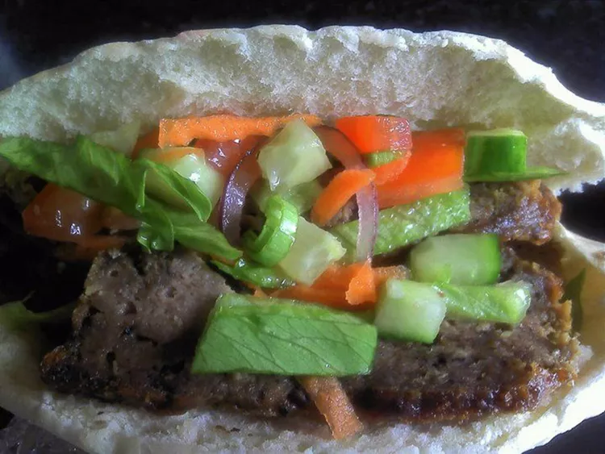

Turkish Doner Kebab Recipe

Delicious Turkish Doner Kebab Recipe
Bring the flavours of Turkey to your table with this authentic doner kebab
recipe. Featuring perfectly spiced, tender meat and served with fresh
vegetables and warm flatbread, this dish is a delicious and satisfying
meal for any occasion.
Ingredients
- 1 teaspoon all-purpose flour
- 1 teaspoon dried oregano
- ½ teaspoon salt
- ½ teaspoon garlic powder
- ½ teaspoon onion powder
- ½ teaspoon dried Italian herb seasoning
- ¼ teaspoon ground black pepper
- ¼ teaspoon cayenne pepper
- 1 ¼ pounds ground lamb
Steps
- Preheat the oven to 350 degrees F (175 degrees C).
-
Combine flour, oregano, salt, garlic powder, onion powder, Italian
seasoning, black pepper, and cayenne pepper in a large bowl. Add ground
lamb and knead until thoroughly mixed together, about 3 minutes.
-
Shape seasoned lamb mixture and place into a loaf pan; set on top of a
baking sheet.
-
Bake in the preheated oven, turning halfway to ensure even browning, for
about 1 hour and 20 minutes.
-
Wrap loaf in aluminum foil and let rest for about 10 minutes. Slice as
thinly as possible to make doner kebab pieces.